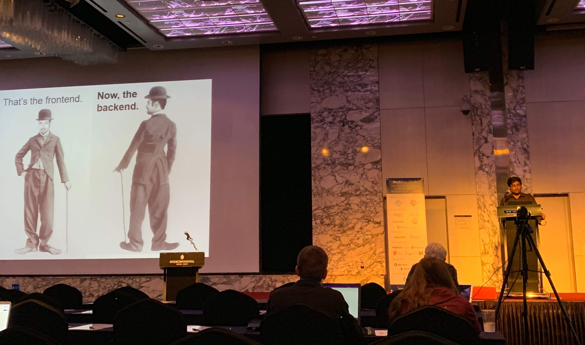

Dinesh Bharadia
Assistant Professor
Department of Electrical Engineering
University of California, San Diego
Office: Atkinson Hall, 4308
Email: dineshb [at] eng.ucsd.edu
About
We are proud members of Wireless Communication Sensing and Networking Group (WCSNG). We believe that progress is a result of unconventional thinking and dedicated work to improve the current state of technology. Our research areas span modern wireless communication systems, sensor networks, and machine learning. Some of our impact areas are Medical Diagnosis, Telecommunications, V2X, VR/AR and Safety.
We work with software radios such as USRP, WARP board, GPS, Quantenna WiFi. We also develop customized testbed for full duplex and millimeter wave research. Our group targets top system conferences such as NSDI, Mobicom, Siggcom, Mobisys among others.


Research

We develop state-of-the-art methods [BLoc, SpotFi, WiDeo, Spoton] for locating WiFi devices and BLE (Bluetooth Low Energy) tags.

Fast sensing of broad wireless spectrum using commodity SDRs. How wide? How fast? Think about what would you do with tons of wideband spectrum data.

Full Duplex is brought from theory to practice. Learn how to achieve self-interference cancellation and its numerous applications.

Millions of IoT devices work on backscatter principle. Look for other exciting applications, e.g., Full Duplex relays.

Self-Driving Cars requires robust sensing (the environment) and communication (V2X). Find out the importance of Radar for sensing.

We develop untethered VR with a robust, high-quality wireless communication link. Infrastructure-free VR enabled by wireless tracking of VR headset.

We are improving the communication rate, efficiency, low latency, and robustness using commodity WiFi and millimeter-wave radios.

Research on ancient caves or Mars landing vehicle! Explore the diversity of out-of-the-box research ideas.
We are looking for passionate new PhD students, Postdocs, and Master students to join the team (more info) !
News
Dec 2019ISSCC 2020 accepted "A 28μW IoT Tag That Can Communicate with Commodity WiFi"
Dec 2019NSDI 2020 accepted LocAP- Localization of existing Wifi Infrastructure. Congrats Roshan and team!
Nov 2019ScatterMIMO accepted at Mobicom 2020. Congrats Manideep and team!
Nov 2019DLoc (Deep Learning based WiFi localization) accepted at Mobicom 2020. Congrats Roshan and team!
Sep 2019Aditya, Agrim, Raghav, Nikhil, and Byungjun joined WCSNG. Welcome!
20 June 2019Yeswanth presented SparSDR at Mobysis 2019, Seoul, South Korea. 
20 June 2019Siddharth presented Capttery at Mobysis 2019, Seoul, South Korea.
19 June 2019Yue, Aman, and Yongxi presented their work on SIGNet in CVPR 2019, Long Beach, CA, USA.
9 June 2019Year-end celebration for graduating studnets.